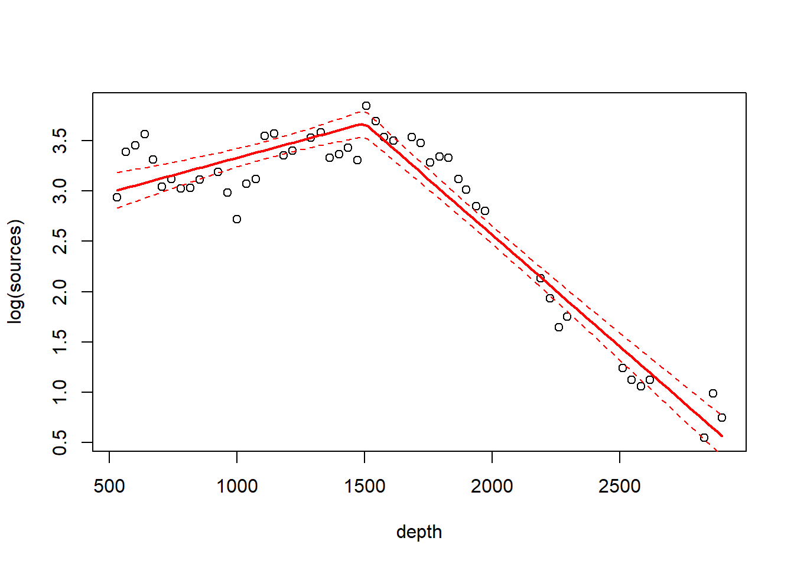

Chapter 4 Smooth regression
4.1 Lo(w)ess smoothers
We will illustrate LOESS smoothers with the bioluminescence data found in the ISIT data set. These data can be found by visiting the webpage for the book ``Mixed Effects Models and Extensions in Ecology with R’’ by Zuur et al. (2009). A link to this webpage appears on the course website.
## download the data from the book's website
isit <- read.table("data/ISIT.txt", head = T)
## extract the data from station 16
st16 <- subset(isit, Station == 16)
## retain just the variables that we want, and rename
st16 <- st16[, c("SampleDepth", "Sources")]
names(st16) <- c("depth", "sources")
with(st16, plot(sources ~ depth))
Fit a loess smoother using the factory settings:
st16.lo <- loess(sources ~ depth, data = st16)
summary(st16.lo)## Call:
## loess(formula = sources ~ depth, data = st16)
##
## Number of Observations: 51
## Equivalent Number of Parameters: 4.33
## Residual Standard Error: 4.18
## Trace of smoother matrix: 4.73 (exact)
##
## Control settings:
## span : 0.75
## degree : 2
## family : gaussian
## surface : interpolate cell = 0.2
## normalize: TRUE
## parametric: FALSE
## drop.square: FALSEPlot the fit, this takes a little work
depth.vals <- with(st16, seq(from = min(depth),
to = max(depth),
length = 100))
st16.fit <- predict(object = st16.lo,
newdata = depth.vals,
se = TRUE)
with(st16, plot(sources ~ depth))
lines(x = depth.vals, y = st16.fit$fit, col = "blue")
# add 95% error bars
lines(x = depth.vals,
y = st16.fit$fit + st16.fit$se.fit * qt(p = .975, df = st16.fit$df),
col = "blue",
lty = "dashed")
lines(x = depth.vals,
y = st16.fit$fit - st16.fit$se.fit * qt(p = .975, df = st16.fit$df),
col = "blue",
lty = "dashed")
Examine the residuals:
## see what the fit returns; maybe the residuals are already there
names(st16.lo) # they are!## [1] "n" "fitted" "residuals" "enp" "s" "one.delta"
## [7] "two.delta" "trace.hat" "divisor" "robust" "pars" "kd"
## [13] "call" "terms" "xnames" "x" "y" "weights"plot(st16.lo$residuals ~ st16$depth)
abline(h = 0, lty = "dotted")
Let’s look at how changing the span changes the fit. We’ll write a custom function to fit a LOESS curve, and then call the function with various values for the span.
PlotLoessFit <- function(x, y, return.fit = FALSE, ...){
# Caluclates a loess fit with the 'loess' function, and makes a plot
#
# Args:
# x: predictor
# y: response
# return.fit: logical
# ...: Optional arguments to loess
#
# Returns:
# the loess fit
my.lo <- loess(y ~ x, ...)
x.vals <- seq(from = min(x), to = max(x), length = 100)
my.fit <- predict(object = my.lo,
newdata = x.vals,
se = TRUE)
plot(x, y)
lines(x = x.vals, y = my.fit$fit, col = "blue")
lines(x = x.vals,
y = my.fit$fit + my.fit$se.fit * qt(p = .975, df = my.fit$df),
col = "blue",
lty = "dashed")
lines(x = x.vals,
y = my.fit$fit - my.fit$se.fit * qt(p = .975, df = my.fit$df),
col = "blue",
lty = "dashed")
if (return.fit) {
return(my.lo)
}
}Now we’ll call the function several times, each time chanigng the value of the span argument to the loess function:
PlotLoessFit(x = st16$depth, y = st16$sources, span = 0.5)
PlotLoessFit(x = st16$depth, y = st16$sources, span = 0.25)
PlotLoessFit(x = st16$depth, y = st16$sources, span = 0.1)
Let’s try a loess fit with a locally linear regression:
PlotLoessFit(x = st16$depth, y = st16$sources, span = 0.25, degree = 1)
4.2 Splines
We’ll first fit and plot a smoothing spline.
library(mgcv)## Loading required package: nlme## This is mgcv 1.8-35. For overview type 'help("mgcv-package")'.st16.spline <- gam(sources ~ s(depth), data = st16)
plot(st16.spline, se = TRUE) # note that the plot does not include the intercept
Note that the plot includes only the portion of the model attributable to the covariate effect. By definition, the fit has effectively subtracted out the mean. Let’s take a look at the information produced by a call to summary:
summary(st16.spline)##
## Family: gaussian
## Link function: identity
##
## Formula:
## sources ~ s(depth)
##
## Parametric coefficients:
## Estimate Std. Error t value Pr(>|t|)
## (Intercept) 12.4771 0.3921 31.82 <2e-16 ***
## ---
## Signif. codes: 0 '***' 0.001 '**' 0.01 '*' 0.05 '.' 0.1 ' ' 1
##
## Approximate significance of smooth terms:
## edf Ref.df F p-value
## s(depth) 8.813 8.99 158.2 <2e-16 ***
## ---
## Signif. codes: 0 '***' 0.001 '**' 0.01 '*' 0.05 '.' 0.1 ' ' 1
##
## R-sq.(adj) = 0.966 Deviance explained = 97.2%
## GCV = 9.7081 Scale est. = 7.8402 n = 51Make a plot that includes both the points and the fit
with(st16, plot(sources ~ depth))
st16.fit <- predict(st16.spline,
newdata = data.frame(depth = depth.vals),
se = TRUE)
lines(x = depth.vals, y = st16.fit$fit)
## add +/- 2 SE following Zuur; this is only approximate.
## should probably use a critical value from a t-dist with n - edf df, that is, 51 - 9.81 = 41.19 df
lines(x = depth.vals, y = st16.fit$fit + 2 * st16.fit$se.fit, lty = "dashed")
lines(x = depth.vals, y = st16.fit$fit - 2 * st16.fit$se.fit, lty = "dashed")
Find the AIC for the smoothing spline fit:
AIC(st16.spline)## [1] 260.4811Here’s a small detail. Notice that the syntax of the call to predict is slightly different when making a prediction for a loess object vs. making a prediction for a gam object (which the spline fit is). For a call to predict with a loess object, the new predictor values can be provided in the form of a vector. So, we were able to use
depth.vals <- with(st16, seq(from = min(depth),
to = max(depth),
length = 100))
st16.fit <- predict(object = st16.lo,
newdata = depth.vals,
se = TRUE)However, for a call to predict with a gam object, the new predictor values must be provided in the form of a new data frame, with variable names that match the variables in the gam model. So, to get predicted values for the spline fit, we needed to use the more cumbersome
depth.vals <- with(st16, seq(from = min(depth),
to = max(depth),
length = 100))
st16.fit <- predict(st16.spline,
newdata = data.frame(depth = depth.vals),
se = TRUE)